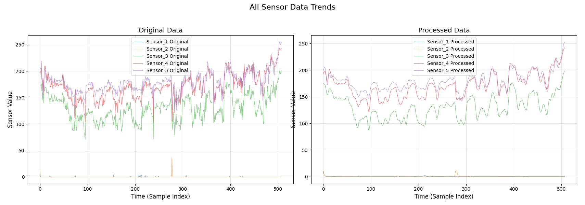
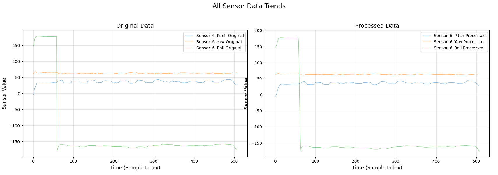
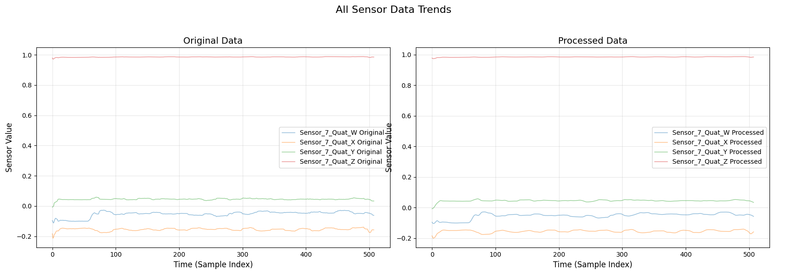

多模态信息融合感知的手势识别方法与系统设计¶
本科二年级时做的大学生创新创业项目，由王文东老师指导，我主要负责数据处理和手语识别算法部分的搭建。
项目初期：阅读论文了解开发流程¶
初步规划¶
这个项目的初衷就是：设计一套可穿戴的嵌入式智能感知系统，能够不依靠视觉也可高效准确地识别军事手语并传递信息
整个项目核心的理念就是采用多模信息融合的方式去“表示”军事手语
人体在做出动作的过程中，信息会通过不同的形式展现出来，单一传感器获得的数据过于片面，且由于传感器自身的零漂和温漂，使得测量结果产生较大误差。通过多种不同类型的传感器共同采集手语动作的信号可使不同信号的优势进行互补，提高识别鲁棒性。
之后再对这些融合好的数据，选用合理的算法去识别这些手语。研究生学长的论文中选用的算法是深度卷积神经网络，在使用他攻读研究生期间制成的成品手语识别手套时，发现其识别准确率还是很可观的。所以我想的是在大创研究期间，先去复现他的方法（深度卷积神经网络）来熟悉数据采集、处理和算法搭建这一整套流程，再根据自己的理解来寻找一个更好的算法来提高识别速度或提升准确率。
一些概念的理解和数理推导¶
首先是模态，它可以理解为系统或对象的一种特定状态、模式或行为方式，它通常与系统的动态特性、结构特征以及信息的表现形式等相关。
在自动控制原理课程的学习中就已经接触过模态了：
线性微分方程的解由齐次方程的通解（反映系统自由运动的规律）和输入信号对应的特解组成。如果微分方程的特征根时单实根\(\lambda_{1}\),\(\lambda_{2}\),...,\(\lambda_{n}\)，则把函数\(e^{\lambda_{1}t}\),\(e^{\lambda_{2}t}\),...,\(e^{\lambda_{n}t}\)称为该微分方程所描述运动的模态，也叫振型（源自《自动控制原理》卢京潮编著）
例如，一个二阶线性系统，其系统矩阵的特征值可能是两个实数，这就对应着两种不同的模态，可能是一个模态是指数衰减的，另一个模态是指数增长的（如果系统不稳定）；或者特征值是一对共轭复数，那么系统的响应就会呈现出振荡的模态，振荡的频率和衰减速度由特征值的实部和虚部共同决定。
如何进行多模态数据融合？论文中给了三个阶段：
- 多模态数据的汇聚：将每个模态传感器的数据信息汇聚成较大的集合
- 多模态数据的合并与消除：主要是通过将重合度与相关度较高或者同样的信息进行剔除
- 多模态数据的整合：将第二阶段的结果继续整合，得到新的融合数据
按照融合阶段的不同将融合分为三个层次：
- 数据层融合（先对数据进行融合，再提取特征进行决策）
多传感器数据（如加速度计、陀螺仪、弯曲传感器）需同步分析，动作的时空关联性强
-
特征层融合（对每路数据进行特征提取并融合特征，再决策） 自动驾驶中，融合激光雷达（3D点云特征）与摄像头（2D图像特征），提取联合特征用于目标检测
-
决策层融合（先对每路数据提取特征并决策，最后将所有决策结果融合） 无人机导航中，GPS信号丢失时，优先依赖视觉SLAM和惯性导航的融合决策
军事手语识别需要综合手指弯曲度、加速度、角速度等多种传感器的时序数据，所以我们选择在数据层对信息进行融合，采用的方法是加权平均法。
数据预处理¶
组员已经将数据采集整理好了，由我对其进行处理，我暂时选取了三种“特征明显”的手语数据进行分析：停止，敌人，观察。由于原始数据呈现锯齿状，我先进行数据降噪再做分析。我选择先通过移动平均滤波进行初步的平滑处理，去除高频噪声，再利用 Savitzky - Golay 滤波在保留信号特征的前提下进一步提高滤波效果，结果如下：
Savitzky - Golay 滤波基于最小二乘法多项式拟合。它的基本思想是在每个数据点的邻域内，用一个低阶多项式来拟合该邻域内的数据点，然后用拟合多项式在该点的值来代替原始数据点的值，从而达到平滑数据、去除噪声的目的



后两者原始数据中波动不大，但还是顺手将它们处理了。观察可知欧拉角、四元数和手指弯曲度的数据幅值也有较大差异，所以最后进行归一化，数据预处理结束 $$ \overline{X} = \frac{X - X_{\min}}{X_{\max} - X_{\min}} $$ 五个手指弯曲度可直接反映出手指状态，而欧拉角和四元数直接描述了手臂和手掌的姿态，因已可以直接作为特征值使用。（后来发现以上三种信息只能描述静态的军事手语，而对于动态的手语（如掩护）需要加入速度与加速度来和静态手语做区分，组员还没有采集速度和加速度的数据，所以我先行学习算法，搭建框架，用静态手语做个测试）
项目中期：算法搭建，识别手语¶
现在的问题背景是：通过数据手套去采集5个手指弯曲传感器、一个小臂传感器，一个大臂传感器的数据，实现对手势的识别
论文中研究生学长给出的最终算法方案是深度卷积神经网络，我在想还有没有能用的，之后也可以做个比较，于是询问GPT，它给我的建议是：RNN变体（LSTM/GRU/BiLSTM），CNN-LSTM混合架构，Transformer（Informer、Autoformer）。我决定先复现学长的代码，之后再尝试一下Transformer
深度卷积神经网络（DCNN）简介¶
深度卷积神经网络（Deep Convolutional Neural Network，DCNN）是一种特殊的深度学习模型，它在卷积神经网络（CNN）的基础上进行了深度扩展，包含多个卷积层、池化层和全连接层。以下是 DCNN 的一些关键组件及其功能：
- 卷积层（Convolutional Layer）：通过卷积核（滤波器）在输入数据上滑动，进行卷积操作，提取数据中的局部特征。卷积核可以学习到不同的特征模式，如边缘、纹理等。
卷积层的作用就像是：假设我们正在看一堆不同的图片，每张图片里都有各种各样的小细节。卷积层就像是拿着放大镜在这些图片上仔细观察。卷积核，它在图片上一格一格地滑动。每滑动到一个地方，就会把这个小区域的信息进行整合和分析。通过不断地滑动，卷积核可以发现一些固定的特征模式，就好比它能找出图片里手指弯曲的样子、手臂倾斜的角度
后续我实现了一维卷积层（Conv1D），它沿着传感器数据的时间线去寻找特征，看看在不同时刻手指和手臂的状态有什么规律。
- 池化层（Pooling Layer）：用于降低特征图的维度，减少计算量，同时增强模型的鲁棒性
池化层就是筛选出最重要的特征，我实现的是最大池化层
MaxPooling1D，它会在一维的传感器数据特征里，每隔一段距离就挑出最大的值
- 全连接层（Fully Connected Layer）：将卷积层和池化层提取的特征进行整合，用于最终的分类或回归任务。
我实现的Dense就是全连接层，它会把前面卷积和池化得到的特征进行整合，最后通过激活函数（比如
softmax）给出一个最可能的手势分类结果
为什么能使用DCNN?¶
一开始看到采用CNN相关的算法有点不解（我印象里一般是用来处理图像的），稍微了解一点后DCNN的如下优点让它适合解决这个手势识别的任务：
-
DCNN 可以自动从原始数据中提取有效的特征，无需手动设计特征。
-
卷积操作可以捕捉数据中的局部特征，而手势的特征通常是局部的。
- DCNN 具有平移不变性，即无论特征出现在数据的哪个位置，模型都可以识别。在手势识别中，不同的人可能以不同的位置和角度做出相同的手势，DCNN 可以很好地处理这种情况。
- DCNN 的深度结构可以学习到数据中的复杂非线性关系。
DCNN将我们的数据集看作是一维的时间序列数据
我实现的DCNN¶
大概了解一些后握着手开始编写算法主体，主要是基于tensorflow.keras这个高级神经网络 API，它简化了构建和训练深度学习模型的过程。
导入库部分¶
定义动作列表并合并数据¶
定义了一个动作列表，然后遍历每个动作的数据文件，将其读取为 DataFrame 并添加动作标签列，最后将所有数据合并为一个 DataFrame
提取特征和标签并进行预处理¶
首先从合并后的数据中提取特征和标签，然后使用 LabelEncoder 对标签进行编码，再将编码后的标签转换为独热编码。接着，使用 train_test_split 将数据集划分为训练集和测试集，最后调整输入数据的形状以适应一维卷积层的输入要求
编译DCNN¶
使用 Sequential 模型构建一个一维卷积神经网络（DCNN），包含卷积层、池化层、扁平化层和全连接层。最后，使用 compile 方法编译模型，指定优化器、损失函数和评估指标